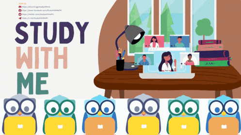
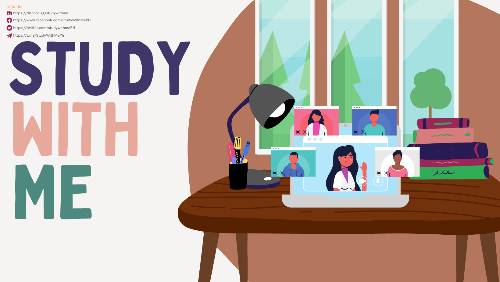

40,000+
members worldwide building better study habits together
StudyWithMe is a 24/7 online community where students & professionals study and work together for focus, support, motivation and accountability. Established in 2020, it is a professional, welcoming Discord space built for students who want accountability, and productivity. From verified access and accountability groups, shared libraries, and recognition systems, SWM is designed to make staying consistent feel easier.

The server combines structure, safety, personality, and practical tools so members can stay focused without feeling isolated. These are the systems that give SWM its rhythm.
Active study energy across different schedules, goals, and time zones.
Guided verification to make the community stay safer and easier to trust.
SWM keeps the atmosphere expressive with server personality built right into conversations.
Dedicated spaces for Forest, YPT, and similar study apps make accountability easier to maintain.
Our bots support community routines, while our verification system helps keep the server organized and secure.
Subject-based spaces are planned to help members find more relevant discussions, support, and study partners.
Academic and leisure reading collections give members a place to explore both coursework and personal reading.
Weekly and monthly leaderboards, class-based and voting perks celebrate consistency and contribution.
Start with the basics, finish the required setup, complete verification, and then head straight into the study spaces that fit your preferred way of working.
Enter the community and begin with the main welcome flow so you understand how the server is organized from the start.
Choose the right roles and settings first so the server can open up the spaces that match your profile and preferences.
Verification is required before you can access chat and join the study voice channels, helping keep the space safer and more organized.
Pick the room style that matches how you study best, whether that means silent rooms, on-cam spaces, pomodoro rooms, or collaborative voice rooms.
The handbook keeps the community respectful, safe, and focused. These core principles give members a quick read on what SWM expects from everyone inside the server.
Members should help protect a calm, supportive environment where people can focus without harassment, hostility, or disruption.
Verification, account safety, and honest participation help keep SWM trustworthy and useful.
Resources, channel use, and public participation should make the server better for everyone, not noisier or harder to manage.
Here is a preview of our channels inside the server.
The essential channels for rules, updates, verification, enrollment, and private support.
Recognition, introductions, surveys, and the wider student-facing life of the server.
General study-adjacent spaces for chatting, help, media, and music around the main study lounge rooms.
The supporting channels for members using the stricter on-cam study spaces.
Guidance and tools for members using customizable study spaces.
Timed focus rooms and the tools that support task tracking while studying in pomodoro mode.
Rules and music tools for collaborative voice-based study spaces.
Useful tools that help members switch modes, track time, stay organized, and find accountability.
Helpful utility tools and access to the StudyWithMe Digital Library.
Partnership and creator-facing channels connected to the broader SWM network.
Academic spaces that open based on the roles a member has selected.
Wellness, journaling, reflection, celebration, and lighter community interaction spaces.
Social rooms and supporting spaces for bonding beyond academics.
The event-facing corner for reminders, giveaways, and attendance.
Interest-based spaces where members can connect through hobbies and shared interests outside studying.
Server spaces for sharing finds, selling items, and future merch drops.
Wellness and fitness spaces for goals, routines, and challenges.
Bots, games, role purchases, and the AFK space all live here.
Our automated ranking system highlights the most dedicated study buddies through daily, weekly, and seasonal leaderboards. This constant visibility ensures that hard work is recognized and provides a clear view of community engagement.
A recurring spotlight for members who maintain consistent study momentum and visible progress.
Long-form recognition for members whose presence and effort shape our server culture.
Exclusive animated roles and gradient tags that highlight your standing in the community.
SWM started in 2020 and has grown into a large worldwide study server that still feels guided and intentional. The goal is not just to gather members, but to create a study environment people can genuinely rely on.
These FAQs come from the server guide materials and cover access, study modes, pomodoro use, support, and finding the right spaces inside SWM.
If you have no access to the channels or you are unverified, make sure to get the required roles in Channels & Roles and complete verification in ✅・verify-here.
You can chat in 💬・lobby. You can also talk with other study buddies in the linked chat for each voice channel.
There is also a 💬・hallway for those in social rooms, though it is viewable only if you are in default mode.
Voice channels are muted to simulate silent study rooms and minimize distractions. If you prefer talking, use the Voice Study Rooms or Custom Study Rooms.
No. While the server was created by a Filipino and initially catered to fellow Filipino study buddies, it has grown into a more diverse community.
Most members are still Filipino, but everyone is welcome. "ARAL" means study.
You can switch modes anytime in 🔴・study-mode or in Channels & Roles.
You can change your optional roles in Channels & Roles.
For academic roles, use 🇵🇭・enrollment for Filipinos or 🌎・enrollment for foreigners.
For Filipinos who want to select a graduate program, choose the post-graduate or alumni role first.
You can find study buddies in 🤓・study-buddies. You can also join any unlocked voice channel to study with others.
For 💭・homework-help, remember that the server is not a tutoring service. You may ask for guidance, explanations, or validation of your approach, but not for direct answers to quizzes, modules, or exams.
Choose your academic levels and programs in 🇵🇭・enrollment for Filipinos or 🌎・enrollment for foreigners. Specific academic channels open depending on your academic roles.
You can choose optional roles in Channels & Roles.
Certain rank roles have animated vibrant gradient colors. MBTI tags, gemstones, and zodiac signs can be bought using study cookies in 😻・mimu. Flower roles are exclusive to server boosters.
Use 📣・bulletin-board for surveys, PSAs, and forms.
The pomodoro system helps you study in focused intervals alongside other buddies. There are three dedicated Pomodoro voice channels, each with its own synced timer.
You only see a pomodoro timer after joining its matching voice channel. You can still interact with the timer even though the interface is read-only. If you fail to mark your presence for three consecutive pomodoro sessions, you will be removed from the pomodoro channel.
Use ☑️・pomodoro-tasks to log tasks while in a pomodoro room, and use the VC chat box for light conversation during breaks.
Read about rank roles in the SWM Rank Roles guide.
Yes, SWM has hosted events in the past. There are no events at the moment, but you can check 📣・event-reminders for updates.
Open a ticket at 🎖・deans-office.
SWM can help you stay motivated, reduce isolation, build productive habits, learn from others, and connect with peers across time zones.
Whether you are preparing for exams, working on assignments, or tackling a personal learning project, the server is designed to improve productivity and make studying feel less lonely.
StudyWithMe welcomes students, professionals, and exam takers who want a more reliable environment for focused work. If you are looking for accountability, safer study spaces, and a global group of peers who understand the process, this is where to start.
Join the server to access study rooms, accountability systems, verified entry, and a community built around long-term consistency rather than short bursts of motivation.
